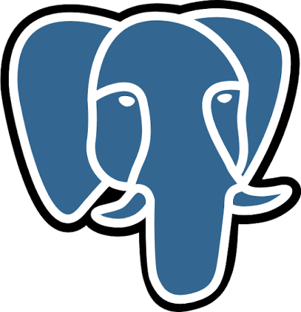

Olá, eu sou
Gustavo Da Silva Dutra
Desenvolvedor(a) em formação · Banco de Dados · Análise de Sistemas
Estudante de Análise e Desenvolvimento de Sistemas, apaixonado(a) por transformar problemas reais em soluções de software bem planejadas. Tenho experiência acadêmica em levantamento de requisitos, modelagem de dados e desenvolvimento web, e busco minha primeira oportunidade na área de tecnologia.
Fale comigoHabilidades
Tecnologias, ferramentas e competências que utilizo.
Banco de Dados
Engenharia de Software
Ferramentas
Projetos
Projetos acadêmicos que mostram o que já construí..

Eventos BH
Banco de dados em PostgreSQL para gestão de eventos: modelagem, DER e scripts SQL.
Ver projeto

Monitoramento sustentavel
Monitorar de forma sustentavel em escolas o gasto de energia e agua
Ver projeto
Conecta Obra
Restos de obras poderam ser doado a pessoas ou instituições que estão em necessidade.
Ver projetoFormação e experiência
Formação acadêmica
- Análise e Desenvolvimento de Sistemas – Senac (em andamento)
- Ensino Médio – Escola Estadual João Dom Bosco Burnier (2022)
- Pacote Oficce – CNI (2019)
Cursos
- Tecnico em Informatica - Senac Minas (1200 horas)
- Power BI– Udemy (7 horas)
- Fundamentos em Python - Cisco (30 horas)
- Fundamento em redes - Cisco (70 horas)
Experiência
- Projetos acadêmicos – modelagem de dados, requisitos e desenvolvimento web
- Experiência profissional ou voluntária (se houver)